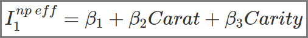

tibble [53,940 × 10] (S3: tbl_df/tbl/data.frame)
$ carat : num [1:53940] 0.23 0.21 0.23 0.29 0.31 0.24 0.24 0.26 0.22 0.23 ...
$ cut : Ord.factor w/ 5 levels "Fair"<"Good"<..: 5 4 2 4 2 3 3 3 1 3 ...
$ color : Ord.factor w/ 7 levels "D"<"E"<"F"<"G"<..: 2 2 2 6 7 7 6 5 2 5 ...
$ clarity: Ord.factor w/ 8 levels "I1"<"SI2"<"SI1"<..: 2 3 5 4 2 6 7 3 4 5 ...
$ depth : num [1:53940] 61.5 59.8 56.9 62.4 63.3 62.8 62.3 61.9 65.1 59.4 ...
$ table : num [1:53940] 55 61 65 58 58 57 57 55 61 61 ...
$ price : int [1:53940] 326 326 327 334 335 336 336 337 337 338 ...
$ x : num [1:53940] 3.95 3.89 4.05 4.2 4.34 3.94 3.95 4.07 3.87 4 ...
$ y : num [1:53940] 3.98 3.84 4.07 4.23 4.35 3.96 3.98 4.11 3.78 4.05 ...
$ z : num [1:53940] 2.43 2.31 2.31 2.63 2.75 2.48 2.47 2.53 2.49 2.39 ...Neural Networks
Learning Outcomes
How to work with a graphical representation of a Neural Network
How to transform the graphical representation into a Neural Network prediction function
How to use an Optimizer in a Neural Network to change the network’s parameters to step-wise improve the approximation quality
Why Neural Networks have outstanding approximation qualities that allow them to approximate any continuous function with any degree of accuracy
How and why the outstanding approximation quality of Neural Networks makes them prone to overfitting
How to work with the R nnet package and with PyTorch to design and run a Neural Network
Why a Neural Network with ReLU (Rectified Linear Unit) activation functions has the same outstanding approximation properties as a Neural Network with classic Sigmoid activation functions
Why ReLU functions mitigate the possible inability of the Optimizer to change the values for the β parameters
How to use PyTorch in an interactive project to estimate the prices of more than 50,00050,000 diamonds based on four common predictors used in the appraisal industry (Carat, Clarity, Cut, and Color)
The Early Days
In the early days of artificial neural networks, data scientists tried to mimic the human brain through computer models.
Types of Neural Networks
- Multi-Layer Perceptrons (MLP) neural networks (covered here)
- Convolutional Neural Networks (CNN)
- Recurrent Neural Networks (e.g. Long Short Term Memory recurrent networks)
- Generative Adversarial Networks
- AutoEncoders
- Transformers»
Multi-Layer Perceptrons (MLP) Neural Network
- Input Layer: with one or more input neurons.
- Hidden Layer(s) one or more hidden layers with one or more hidden neurons.
- Output Layer: with one or more output neurons.
- Fully connected: each neuron in each of the layers is connected to all neurons of the following layer.
Example for an MLP Neural Network with One Hidden Layer
The Data
We will estimate diamond prices based on their physical properties and use the well-known diamonds dataset automatically loaded together with tidymodels:
Domain Knowledge: The Four C s to Appraise a Diamond
Cut: Refers to the facets, symmetry, and reflective qualities of a diamond. The cut of a diamond is directly related to its overall sparkle and beauty.
Color: Refers to the natural color or lack of color visible within a diamond. The closer a diamond is to “colorless,” the higher its value.
Clarity: Is the visibility of natural microscopic inclusions and imperfections within a diamond. Diamonds with little to no inclusions are considered particularly rare and highly valued.
Carat: Is the unit of measurement used to describe the weight of a diamond. It is often the most visually apparent factor when comparing diamonds.
Data Engeneering
We start with a very basic model with 2 predictors for \(Price\):
\(Carat\) (the weight of the diamond in metric grams),
\(Clarity\) (eight categories with \(8\) being the best).
To later increase training speed, we use only 10,000 observations.
Code
set.seed(777)
DataDiamonds=diamonds %>%
clean_names("upper_camel") %>%
select(Price, Carat, Clarity) %>%
mutate(Clarity=as.integer(Clarity)) %>%
sample_n(10000)
set.seed(777)
Split70=DataDiamonds %>%
initial_split(prop = 0.7, strata = Price, breaks = 5)
DataTrain=training(Split70)
DataTest=testing(Split70)
print(DataTrain)# A tibble: 6,999 × 3
Price Carat Clarity
<int> <dbl> <int>
1 506 0.3 3
2 628 0.28 6
3 753 0.3 7
4 766 0.3 6
5 552 0.35 5
6 743 0.33 5
7 698 0.31 4
8 526 0.3 4
9 675 0.3 5
10 544 0.31 4
# ℹ 6,989 more rowsUse a Trained Neural Nework (\(\beta s\) are known) to Predict
Effectiv Inputs to Hidden Neurons:

Use a Trained Neural Nework (\(\beta s\) are known) to Predict
Calculate Activity in Hidden Neurons with Logistic Function
Use a Trained Neural Nework (\(\beta s\) are known) to Predict
Calculate Prediction from Activities in Hidden Neurons:
Prediction of the Neural Network
\[\widehat P =\beta_7 + \beta_8 A^{ct}_1 + \beta_9 A^{ct}_2\] A neural network can be transformed into a prediction equation that depends only on the \(\beta s\) and the values of the predictor variables!
We will show this in more detail on the following slides.»
Transformation From Neural Network to Prediction Equation
\[\widehat P =\beta_7 + \beta_8 A^{ct}_1 + \beta_9 A^{ct}_2\]
\(A^{ct}_1\) and \(A^{ct}_2\) depend on \(I^{np\ eff}_1\) and \(I^{np\ eff}_2\) (and the \(\beta s\))
\(I^{np\ eff}_1\) and \(I^{np\ eff}_2\) depend on the values of predictor variables \(Carat\) and \(Clarity\) (and the \(\beta s\))
Consequently, prediction depends only on the values of predictor variables and the \(\beta s\)!»
Transformation From Neural Network to Prediction Equation
To show the transformation, we move backwards from right to left through the neural network.
\[\widehat P =\beta_7 + \beta_8 A^{ct}_1 + \beta_9 A^{ct}_2\]
Transformation From Neural Network to Prediction Equation
Inside the Hidden Neurons:
Transformation From Neural Network to Prediction Equation
Inside the Hidden Neurons
\[\widehat P =\beta_7 + \beta_8 A^{ct}_1 + \beta_9 A^{ct}_2\]
\[ \widehat{P_i}=\beta_7+ \overbrace{ \frac{1}{1+e^{-I^{np\ eff}_1}} }^{A^{ct}_1}\cdot \beta_8+ \overbrace{ \frac{1}{1+e^{-I^{np\ eff}_2}} }^{A^{ct}_1}\cdot\beta_9 \]
Transformation From Neural Network to Prediction Equation
Between the Input and the Hidden Layer:
Transformation From Neural Network to Prediction Equation
Between the Input and the Hidden Layer:
\[\widehat P =\beta_7 + \beta_8 A^{ct}_1 + \beta_9 A^{ct}_2\]
\[ \widehat{P_i}=\beta_7+ \overbrace{ \frac{1}{1+e^{-I^{np\ eff}_1}} }^{A^{ct}_1}\cdot \beta_8+ \overbrace{ \frac{1}{1+e^{-I^{np\ eff}_2}} }^{A^{ct}_1}\cdot\beta_9 \]
\[\begin{eqnarray*}
\widehat{P_i}&=&\beta_7+
\overbrace{
\frac{1}{1+e^{-(\beta_1 +\beta_2 Carat_i+\beta_3 Clarity_i)}}
}^{A^{ct}_1}\cdot \beta_8\\
&&+
\overbrace{
\frac{1}{1+e^{-(\beta_4 +\beta_5 Carat_i+\beta_6 Clarity_i)}}
}^{A^{ct}_2}\cdot\beta_9
\end{eqnarray*}\]
If we know the \(\beta s\) We Can Generate Predictions!
\[\begin{eqnarray*} \widehat{P_i}&=&\beta_7\\ &+&\overbrace{ \frac{1}{1+e^{-(\beta_1 +\beta_2 Carat_i+\beta_3 Clarity_i)}} }^{\mbox{$A^{ct}_1$}}\cdot \beta_8 \\ &+&\overbrace{ \frac{1}{1+e^{-(\beta_4 +\beta_5 Carat_i+\beta_6 Clarity_i)}} }^{\mbox{$A^{ct}_2$}}\cdot\beta_9 \end{eqnarray*}\]initial \(\beta s\) are chosen at random.
optimal \(\beta s\) are found with the optimizer.»
Predicting the First Observation of the Training Data
Predictor Variables’ Values: \(Carat=0.3\) and \(Clarity=3\)
Predicting the First Observation of the Training Data
Effective Inputs: \(Carat=0.3\) and \(Clarity=3\)
Predicting the First Observation of the Training Data
Effective Input 1: \(Carat=0.3\) and \(Clarity=3\)
\[\beta_1 = 0.1, \beta_2=-0.9 ,\beta_3 =0.5\]
\[I_1^{np\ eff}=\beta_1+ \beta_2 Carat + \beta_3 Clarity\]
\[I_1^{np\ eff}=\underbrace{1 \cdot 0.1}_{1 \cdot \beta_1=0.1}+\underbrace{0.3\cdot(-0.9)}_{Carat\cdot \beta_2=-0.27}+\underbrace{3\cdot 0.5}_{Clarity \cdot\beta_2=First5}=1.33\]
Predicting the First Observation of the Training Data
Effective Input 2: \(Carat=0.3\) and \(Clarity=3\)
Predicting the First Observation of the Training Data
Effective Input 2: \(Carat=0.3\) and \(Clarity=3\)
\[\beta_4 = -0.1,\beta_5 = 0.8,\beta_6 =0.6\]
\[I_2^{np\ eff}=\beta_4+ \beta_5 Carat + \beta_6 Clarity\]
\[I_2^{np\ eff}=\underbrace{1 \cdot (-0.1)}_{1 \cdot \beta_4=-0.1}+\underbrace{0.3\cdot0.8}_{Carat\cdot \beta_5=0.24}+\underbrace{3\cdot 0.6}_{Clarity \cdot\beta_6=1.8}=1.94\]
Predicting the First Observation of the Training Data
Hidden Neurons’ Activity: \(I_1^{np\ eff}=1.33\) \(I_2^{np\ eff}=1.94\)
Predicting the First Observation of the Training Data
Hidden Neurons’ Activity: \(I_1^{np\ eff}=1.33\) and \(I_2^{np\ eff}=1.94\)
\[A^{ct}_1=\frac{1}{1+e^{-I_1^{np\ eff}}}\]
\[A^{ct}_1= \frac{1}{1+e^{-1.33}}=0.79\]
\[A^{ct}_2=\frac{1}{1+e^{-I_2^{np\ eff}}}\]
\[A^{ct}_2=\frac{1}{1+e^{-1.94}}=0.87\]
Predicting the First Observation of the Training Data
Prediction:
\(\beta_7=0.1\), \(\beta_8=0.8\), \(\beta_9=0.9\), \(A^{ct}_1=0.79\) and \(A^{ct}_2=0.87\)
Predicting the First Observation of the Training Data
Prediction:
\(\beta_7=0.1\), \(\beta_8=0.8\), \(\beta_9=0.9\), \(A^{ct}_1=0.79\) and \(A^{ct}_2=0.87\)
\[ \widehat P =\beta_7 + \beta_8 A^{ct}_1 + \beta_9 A^{ct}_2 \]
\[ \widehat P = 0.1+0.8\cdot 0.79 +0.9 \cdot 0.87 = 1.51 \]
The predicted price for a 0.3 g diamond with a clarity level of three is $1.51.
$1.51 for a diamond???
Summary
- We can make prediction with the neural network if we know the values for the \(\beta s\). We do know the \(\beta s\) because
- they are randomly chosen at the beginning, or
- they are adjusted by the Optimizer.
- when \(\beta's\) are randomly chosen the predictions are useually bad, but they can be improved by the Optimizer.
This raises the question:
How does the Optimizer gradually change the \(\beta s\) to improve the prediction quality of the neural network?
Steepest Gradient Descent
\[MSE= \frac{\sum^N_{i=1}(\widehat P_i - P_i)^2}{N}\]
\[\begin{eqnarray*} \widehat{P_i}&=&\beta_7\\ &+&\overbrace{ \frac{1}{1+e^{-(\beta_1 +\beta_2 Carat_i+\beta_3 Clarity_i)}} }^{A^{ct}_1}\cdot \beta_8 \\ &+&\overbrace{ \frac{1}{1+e^{-(\beta_4 +\beta_5 Carat_i+\beta_6 Clarity_i)}} }^{A^{ct}_2}\cdot\beta_9 \end{eqnarray*}\]Steepest Gradient Descent
\[MSE= \frac{\sum^N_{i=1}(\widehat P_i - P_i)^2}{N}\]
\[\begin{eqnarray*} MSE= \frac{\sum^N_{i=1}\left( \left (\underbrace{\beta_7 +\overbrace{ \frac{1}{1+e^{-(\beta_1 +\beta_2 Carat_i+\beta_3 Clarity_i)}} }^{A^{ct}_1}\cdot \beta_8 +\overbrace{ \frac{1}{1+e^{-(\beta_4 +\beta_5 Carat_i+\beta_6 Clarity_i)}} }^{A^{ct}_2}\cdot\beta_9}_{\widehat{P_i}} \right ) - P_i\right )^2}{N} \end{eqnarray*}\]Steepest Gradient Descent
Initially \(\beta s\) are chosen randomly.
Optimizer adjusts \(\beta s\) incrementally (iteration by iteration; the iterations are called epochs)
Each epoch:
- Find if individual \(\beta\) needs to be increased or decreased.
- Increase \(\beta_i\) and see if \(MSE\) increases or not.
- Decrease \(\beta_i\) and see if \(MSE\) increases or not.
- Reset \(\beta_i\) and note if \(\beta_i\) needs to be increased or decreased.
- Repeat for all \(\beta s\)
- In/Decrease \(\beta`s\) proportional to change of \(MSE\) caused — multiply by learning rate (e.g., 0.01) to keep change small.
- Find if individual \(\beta\) needs to be increased or decreased.
run process for several hundreds or thousands epochs.»
Example: Approximation Properties of Neural Networks
Let us run an example to see how well a Neural Network can approximate.
In the example we will z-normalize the predictors.
Are interested why?
Then use the down-arrow to proceed with the slides.
Otherwise, use the left-arrow.
Why is Scaling of Predictors Needed?
Logistic Activation Function
If inputs are not scaled and if they lead to very big effective inputs, the slope of the activation function will be very close to 0 and different effective inputs are indistinguishable.
Example: Approximation Properties of Neural Networks
To run the R-script with an example to see how well a Neural Network can approximate:
Click the link in the footer of this slide.
Theorem: Approximation Properties of Neural Networks
“Feedforward networks are capable of arbitrarily accurate approximation to any real-valued continuous function over a compact set.”
I.e.: Single hidden layer feedforward networks can approximate any measurable function arbitrarily well.
Kurt Hornik, Maxwell Stinchcombe and Halber White (1989), p. 361
Intuition: Approximation Properties of Neural Networks
\[\begin{eqnarray*} \widehat{y_i}&=&\beta_{10}+ \overbrace{ \frac{1}{1+e^{-(\beta_1 x_i + \beta_2)}} }^{\mbox{$A^{ct}_1$}}\cdot \beta_7\\ &&+ \overbrace{ \frac{1}{1+e^{-(\beta_3 x_i + \beta_4)}} }^{\mbox{$A^{ct}_2$}}\cdot \beta_8\\ &&+ \overbrace{ \frac{1}{1+e^{-(\beta_5 x_i + \beta_6)}} }^{\mbox{$A^{ct}_3$}}\cdot \beta_9 \end{eqnarray*}\]The app linked in the footer of this slide provides intuition for the Hornik, Stinchcombe, White proof.
Real World Example to Estimate Diamond Prices
You will use all big C variables \(Carat\), \(Clarity\), \(Cut\), and \(Color\).
\(Cut\) describes the quality of the cut of the diamond rated from 1 (lowest) to 6 (highest) and \(Color\) rates the color of a diamond from 1 (highest) to 7 (lowest)Instead of using the
nnetpackage, you will use the more advancedbruleepackage which is based on PyTorch, which is a Python library originally developed by Facebook.We will tune the hyper-parameters of the neural network (e.g., the number of hidden units) using cross validation.
Major Differences: nnet and brulee/PyTorch
bruleeuses internally stop learning.epochsetting refers to maximum epochs- from the training data set a validation set is held back.
- when validation error stops decreasing for 5 epochs training is stopped.
bruleeallows to use ReLu Activation Functions
ReLu Activation Function
\[Act_i=max\left (0, I_i^{eff}\right )\]
Two ReLU functions can be combined into one step function similar to sigmoid functions.
See the link in the footer for a demo.
Logistic Activation Function: Problem of Vanishing Gradient
Logistic Activation Function
Even when activation is determined somewhere in the middle of the activation function the slope is smaller than one. With multiple layers this can propagate to a gradient that is zero because slopes from multiple layers are multiplied (chain rule).
ReLu Activation Function: No Problem of Vanishing Gradient
\[Act_i=max\left (0, I_i^{eff}\right )\]

ReLu has a slope of one.